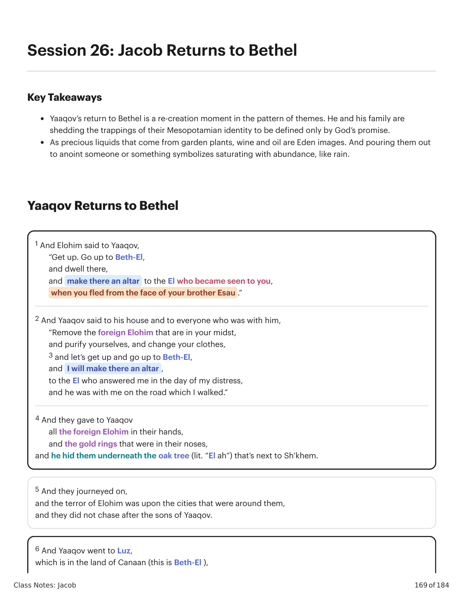
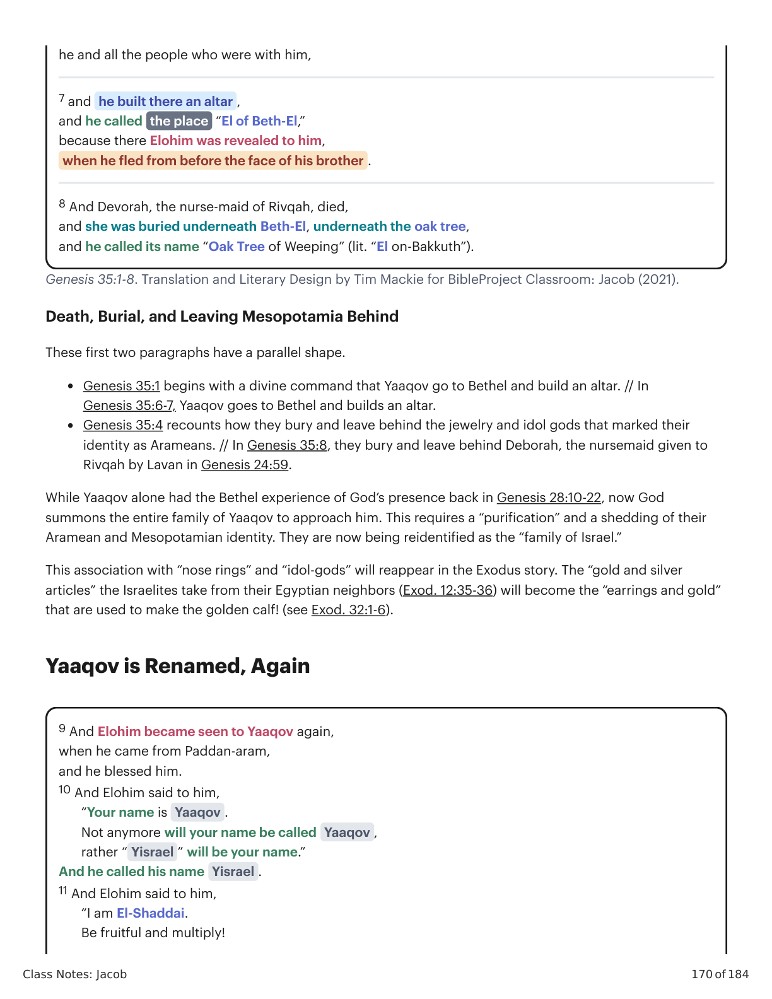
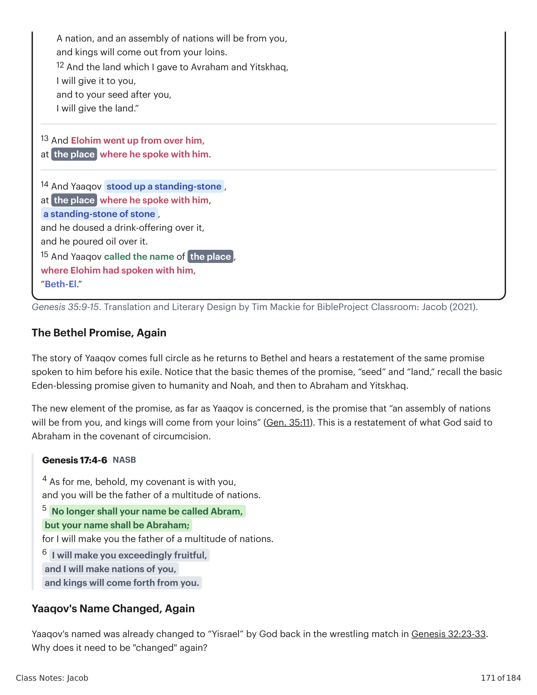

1 E Elohim disse a Jacó: "Levanta-te. Sobe a Betel, e habita ali, e faz aí um altar ao El que se mostrou a ti, quando fugiste da face de teu irmão Esaú." 2 E Jacó disse à sua casa e a todos que estavam com ele: "Tirai os deuses estrangeiros que estão no vosso meio, e purificai-vos, e mudai as vossas roupas, 3 e vamos levantar e subir a Betel, e farei ali um altar, ao El que me respondeu no dia do meu sofrimento, e ele esteve comigo no caminho que eu percorri." 4 E eles deram a Jacó todos os deuses estrangeiros que estavam em suas mãos, e os anéis de ouro que estavam em seus narizes, e ele os escondeu debaixo da árvore de carvalho (lit. "El ah") que fica ao lado de Siquém. 5 E eles seguiram em viagem, e o terror de Elohim estava sobre as cidades que estavam ao redor deles, e eles não perseguiram os filhos de Jacó. 6 E Jacó foi a Luz, que está na terra de Canaã (este é Betel),1 And Elohim said to Yaaqov, “Get up. Go up to Beth-El, and dwell there, and make there an altar to the El who became seen to you, when you fled from the face of your brother Esau .” 2 And Yaaqov said to his house and to everyone who was with him, “Remove the foreign Elohim that are in your midst, and purify yourselves, and change your clothes, 3 and let’s get up and go up to Beth-El, and I will make there an altar , to the El who answered me in the day of my distress, and he was with me on the road which I walked.” 4 And they gave to Yaaqov all the foreign Elohim in their hands, and the gold rings that were in their noses, and he hid them underneath the oak tree (lit. “El ah”) that’s next to Sh’khem. 5 And they journeyed on, and the terror of Elohim was upon the cities that were around them, and they did not chase after the sons of Yaaqov. 6 And Yaaqov went to Luz, which is in the land of Canaan (this is Beth-El ),

Gênesis 35:1-8. Tradução e Design Literário por Tim Mackie para BibleProject Classroom: Jacó (2021).Genesis 35:1-8. Translation and Literary Design by Tim Mackie for BibleProject Classroom: Jacob (2021).
Estes dois primeiros parágrafos têm uma forma paralela. Gênesis 35:1 começa com um mandamento divino de que Jacó vá a Betel e construa um altar. // Em Gênesis 35:6-7, Jacó vai a Betel e constrói um altar. Gênesis 35:4 relata como eles enterram e deixam para trás as joias e os deuses de ídolos que marcavam sua identidade como arameus. // Em Gênesis 35:8, eles enterram e deixam para trás Débora, a ama dada a Rivqa por Lavan em Gênesis 24:59. Enquanto Jacó sozinho teve a experiência de Betel da presença de Deus de volta em Gênesis 28:10-22, agora Deus chama toda a família de Jacó para se aproximar dele. Isso exige uma "purificação" e um abandono de sua identidade arameia e mesopotâmia. Eles estão sendo reidentificados como a "família de Israel." Essa associação com "anelos de nariz" e "deuses de ídolos" reaparecerá na história do � Êxodo. Os "artigos de ouro e prata" que os israelitas levam dos vizinhos egípcios (Exod. 12:35-36) serão os "brincos e ouro" que serão usados para fazer o bezerro de ouro! (veja Exod. 32:1-6).These first two paragraphs have a parallel shape. Genesis 35:1 begins with a divine command that Yaaqov go to Bethel and build an altar. // In Genesis 35:6-7, Yaaqov goes to Bethel and builds an altar. Genesis 35:4 recounts how they bury and leave behind the jewelry and idol gods that marked their identity as Arameans. // In Genesis 35:8, they bury and leave behind Deborah, the nursemaid given to Rivqah by Lavan in Genesis 24:59. While Yaaqov alone had the Bethel experience of God’s presence back in Genesis 28:10-22, now God summons the entire family of Yaaqov to approach him. This requires a “purification” and a shedding of their Aramean and Mesopotamian identity. They are now being reidentified as the “family of Israel.” This association with “nose rings” and “idol-gods” will reappear in the Exodus story. The “gold and silver articles” the Israelites take from their Egyptian neighbors (Exod. 12:35-36) will become the “earrings and gold” that are used to make the golden calf! (see Exod. 32:1-6).
7 e ele e todo o povo que estava com ele construíram ali um altar, e ele chamou o lugar de “El de Betel,” porque ali Elohim se revelou a ele, quando ele fugiu da frente da face de seu irmão . 8 E Débora, a ama de Rivqa, morreu, e ela foi enterrada debaixo de Betel, debaixo da árvore de carvalho, e ele chamou seu nome de “Árvore de Carvalhos de Chorar” (lit. “El em-Bakkuth”). 9 E Elohim se mostrou a Jacó novamente, quando ele veio de Padã-Arã, e ele o abençoou. 10 E Elohim disse a ele: "Teu nome é Jacó . Não mais será chamado Jacó , antes “ Israel ” será teu nome.” E ele chamou seu nome Israel . 11 E Elohim disse a ele: "Eu sou El-Shaddai. Seja frutífero e multiplica-te! 12 E a terra que eu dei a Abraão e a Isaque, eu a darei a ti, e à tua descendência após ti, eu a darei." 13 E Elohim subiu de cima dele, no lugar onde ele falou comigo. 14 E Jacó se levantou uma pedra em pé , no lugar onde ele falou comigo, uma pedra em pé de pedra , e ele derramou sobre ela uma oferta de bebida, e derramou óleo sobre ela. 15 E Jacó chamou o nome do lugar onde Elohim tinha falado com ele, “Betel.”7 and he and all the people who were with him built there an altar, and he called the place “El of Beth-El,” because there Elohim was revealed to him, when he fled from before the face of his brother . 8 And Devorah, the nurse-maid of Rivqah, died, and she was buried underneath Beth-El, underneath the oak tree, and he called its name “Oak Tree of Weeping” (lit. “El on-Bakkuth”). 9 And Elohim became seen to Yaaqov again, when he came from Paddan-aram, and he blessed him. 10 And Elohim said to him, “Your name is Yaaqov . Not anymore will your name be called Yaaqov , rather “ Yisrael ” will be your name.” And he called his name Yisrael . 11 And Elohim said to him, “I am El-Shaddai. Be fruitful and multiply! 12 And the land which I gave to Abraham and Isaac, I will give it to you, and to your seed after you, I will give it.” 13 And Elohim went up from over him, at the place where he spoke with him. 14 And Yaaqov stood up a standing-stone , at the place where he spoke with him, a standing-stone of stone , and he doused a drink-offering over it, and he poured oil over it. 15 And Yaaqov called the name of the place where Elohim had spoken with him, “Beth-El.”

Gênesis 35:9-15. Tradução e Design Literário por Tim Mackie para BibleProject Classroom: Jacó (2021).Genesis 35:9-15. Translation and Literary Design by Tim Mackie for BibleProject Classroom: Jacob (2021).
A luta descrita Yaaqov sozinho, à noite, junto ao riacho Jaboque. Agora Yaaqov está acompanhado por toda a sua família (Gênesis 35:6 deixa isso muito explícito), e juntos eles aparecem diante de Deus em Betel. No Jaboque, Yaaqov estava lutando com Deus. Aqui em Betel, Yaaqov e sua família se reúnem para adorar e para uma declaração de que “El Shaddai” é seu Elohim. No Jaboque, Yaaqov foi abençoado. Aqui em Betel, Yaaqov recebe uma bênção que reis e uma “multidão de nações” virão de seus lombos. Ele fica cercado por uma considerável quantidade de família (os nomes dos filhos estão listados em Gênesis 35:22b-26). Também, lembre-se de que o nome Israel )(ישראל é capaz de dois significados diferentes em hebraico. Significado 1: “Ele Luta com El” — Este significado é ativado na história do Jaboque. Significado 2: “El Governa” — Este significado parece ser ativado na história de Betel porque diretamente depois Yaaqov é dito, pela primeira vez, que “reis virão dos seus lombos.” Em outras palavras, o governo real de El sobre a criação (lembrando Gênesis 1:26-28, humanos governando como imagem de Deus) agora será canalizado através da semente de Israel.The wrestling match depicted Yaaqov alone, at night, by the Jabbok stream. Now Yaaqov is accompanied by all of his family (Gen. 35:6 makes this very explicit), and together they appear before God at Bethel. At the Jabbok, Yaaqov was wrestling with God. Here at Bethel, Yaaqov and his family assemble for worship and for a declaration that “El Shaddai” is their Elohim. At the Jabbok, Yaaqov was blessed. Here at Bethel, Yaaqov is given a blessing that kings and a “multitude of nations” will come from him. He stands with a sizable crew of family around him (the sons’ names are listed in Gen. 35:22b-26). Also, recall that the name Yisrael )(ישראל is capable of two different meanings in Hebrew. Meaning 1: “He Wrestles With El” — This meaning is activated in the Jabbok story. Meaning 2: “El Rules” — This meaning seems to be activated in the Bethel story because directly afterward Yaaqov is told, for the first time, that “kings will come from your loins.” In other words, the royal rule of El over creation (recall Gen. 1:26-28, humans ruling as an image of God) will now be channeled through the seed of Yisrael.

Comparação entre a luta no Jaboque e o retorno a Betel. Criado por Tim Mackie para BibleProject Classroom: Jacó (2021).Comparison between the Jabbok wrestling and the return to Bethel. Created by Tim Mackie for BibleProject Classroom: Jacob (2021).
Compare o retorno de Jacó a Betel em Gênesis 35:1-15 com seu encontro com Deus lá em Gênesis 28:10-22. Como Jacó mudou entre esses dois momentos?Compare Yaaqov’s return to Bethel in Genesis 35:1-15 to his encounter with God there in Genesis 28:10-22. How has Yaaqov changed between these two moments?